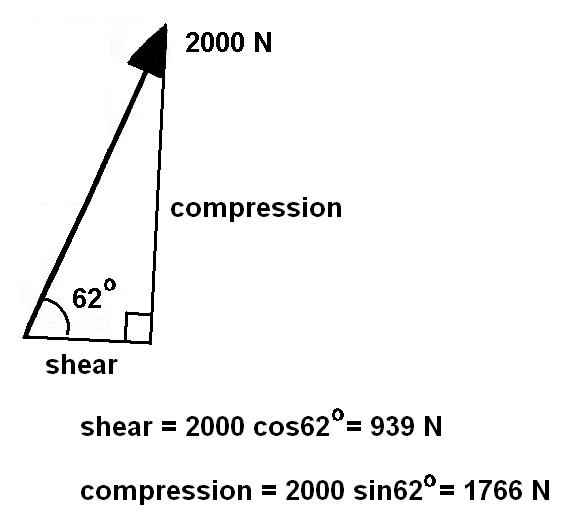

Shear and Compression Components of Muscle Forces
In Biomechanics, we are often concerned with two particular rectangular components of a muscle force. These are the shear and compression components. The shear force tends to dislocate the joint be shearing one bone across the other while the compression component is perpendicular to shear and tends to compress the two bones together. The shear component has implications for ligaments and other structures that maintain the joint integrity and the compression component puts stress on articular cartilage.
Example of Quadriceps Muscle Force via the Patellar Tendon:
Find the shear and compression components of the patellar tendon given the following situation.

Solution
We must identify the shear direction and the perpendicular compression direction. We can see that the force tends to shear the Tibia across the Femur in the direction of the Tibial Plateau. The perpendicular component of the shear force tends to compress the Tibia directly into the Femur. Therefore, we must resolve the muscle force into two rectangular components with shear component in the direction of the Tibial Plateau.
